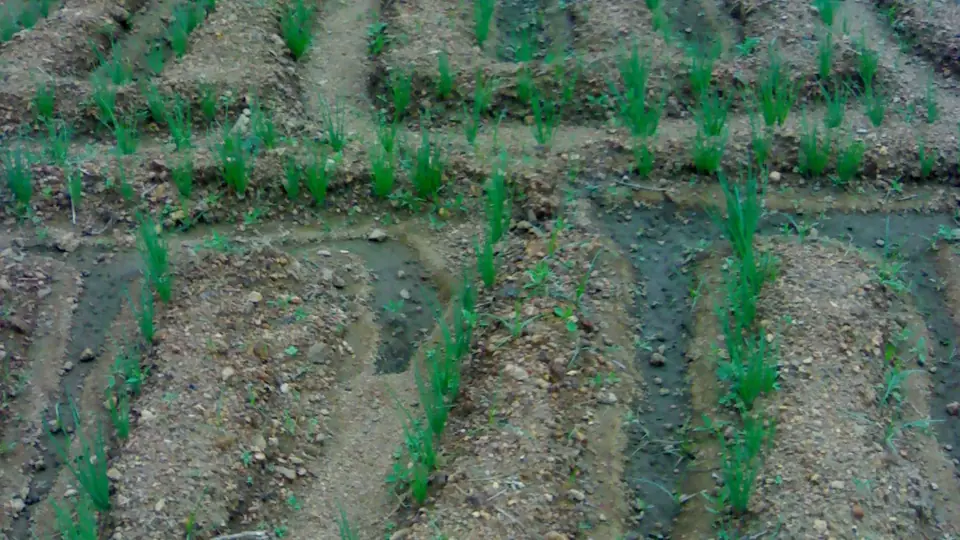

சின்ன வெங்காயம் — வயலிலிருந்து பட்டறை வரை
Small Onion (Chinna Vengayam) Farming
சின்ன வெங்காய விலை வேகமாக ஏறி இறங்கும். நன்றாகப் பதப்படுத்திப் பட்டறையில் சேமிக்கத் தெரிந்த விவசாயிதான் நல்ல விலைக்குக் காத்திருக்க முடியும்.
✍️ Kunal Rajput — KrashiMitra⏱️ 8 நிமிடம் படிக்க📅 அக்டோபர் 2026

வெங்காய வயல். நீர் தேங்காத மேட்டுப்பாத்தியில் நட்டால் குமிழ் அழுகல் குறையும்.
சின்ன வெங்காயம் — ஒரே பார்வையில்
🗓️
செப்.-அக்.
புரட்டாசிப் பட்ட நடவு
☀️
நிழலில்
பதப்படுத்தல்
🏚️
பட்டறை
காற்றோட்டச் சேமிப்பு
📖
முன்னுரை
சாம்பார், வத்தக்குழம்பு, சட்னி — தமிழ்நாட்டு சமையலில் சின்ன வெங்காயம் இல்லாமல் எதுவும்
இல்லை. பெரம்பலூர், திருப்பூர், திண்டுக்கல், திருச்சி, நாமக்கல், தேனி மாவட்டங்கள் சின்ன வெங்காயச்
சாகுபடியின் முக்கிய மையங்கள். இங்கிருந்து வெங்காயம் கேரளா உள்ளிட்ட அண்டை மாநிலங்களுக்கும்,
வெளிநாடுகளுக்கும் செல்கிறது.
ஆனால் சின்ன வெங்காயத்தின் விலை மிக வேகமாக ஏறி இறங்கும். அறுவடை நாளில் விலை குறைவாக இருந்தால்,
நன்றாகப் பதப்படுத்தி பட்டறையில் சேமித்து வைக்கத் தெரிந்த விவசாயிதான் நல்ல விலைக்குக்
காத்திருக்க முடியும். இக்கட்டுரை பட்டம் தேர்வு, விதை, அறுவடைக்குப் பிந்தைய பதப்படுத்தல், சேமிப்பு,
விற்பனை — அனைத்தையும் படிப்படியாக விளக்குகிறது.
விளம்பரம்
🗓️
பட்டம் — எப்போது நடவு?
சின்ன வெங்காயம் தமிழ்நாட்டில் ஆண்டுக்குப் பல பட்டங்களில் பயிரிடப்படுகிறது. பெரம்பலூர், திருச்சிப்
பகுதிகளில் புரட்டாசிப் பட்டம் (செப்டம்பர்-அக்டோபர்) மற்றும் சித்திரை-வைகாசிப்
பட்டம் (ஏப்ரல்-மே) முக்கியமானவை. எந்தப் பட்டத்தில் அனைவரும் ஒரே நேரத்தில் நடுகிறார்களோ,
அந்தப் பட்டத்தின் அறுவடையின்போது சந்தையில் வரத்து அதிகமாகி விலை குறையும் என்பதை மனதில்
வைத்துக்கொள்ளுங்கள்.
பட்டம்
நடவு
கவனிக்க வேண்டியது
புரட்டாசிப் பட்டம்
செப்டம்பர்-அக்டோபர்
வடகிழக்குப் பருவமழையில் வயலில் நீர் தேங்காமல் வடிகால்
மார்கழி-தை பட்டம்
டிசம்பர்-ஜனவரி
பனிக் காலத்தில் இலை நோய்களைக் கண்காணித்தல்
சித்திரை-வைகாசிப் பட்டம்
ஏப்ரல்-மே
வெயிலில் பாசன இடைவெளி; சேமிப்புக்கு ஏற்ற அறுவடை
🧅
விதை வெங்காயமா, விதையா?
பெரும்பாலான விவசாயிகள் முந்தைய அறுவடையிலிருந்து எடுத்த விதை வெங்காயத்தை (குமிழ்)
நடுகிறார்கள். இதில் பயிர் விரைவாக வளரும், ஆனால் விதை வெங்காயச் செலவு அதிகம்; நோய்களும் குமிழ்
வழியாக அடுத்த பயிருக்குப் பரவலாம். தமிழ்நாடு வேளாண்மைப் பல்கலைக்கழகம் (TNAU) வெளியிட்ட
CO (On) 5 போன்ற ரகங்களை உண்மை விதை மூலம் நாற்றங்காலில் வளர்த்து நடலாம் — இதனால்
விதைச் செலவு குறையும்.
விதை வெங்காயத் தேர்வு: நடுத்தர அளவு, உறுதியான, அழுகல் இல்லாத, முளை விட்ட குமிழ்களைத் தேர்ந்தெடுங்கள்.
ஓய்வுக் காலம்: அறுவடை செய்த உடனே குமிழ் முளைக்காது; போதுமான காலம் சேமித்த பின்னரே நடவுக்குப் பயன்படுத்துங்கள்.
விதை நேர்த்தி: தேவையா, எந்த முறை என்பதை அருகிலுள்ள வேளாண் அறிவியல் மையம் (KVK) அல்லது வேளாண்மை உதவி இயக்குநரிடம் கேளுங்கள்; பொருள் பயன்படுத்தினால் லேபிளைப் பின்பற்றுங்கள்.
மேட்டுப்பாத்தி: நீர் தேங்காத மேட்டுப்பாத்தியில் நட்டால் குமிழ் அழுகல் குறையும்.
விளம்பரம்
🔍
வயலில் கண்காணிப்பு — பூச்சியும் நோயும்
சின்ன வெங்காயத்தில் இலைப்பேன் இலைகளில் வெள்ளிநிறக் கோடுகளை உண்டாக்கி வளர்ச்சியைக்
குறைக்கும். பனி, மழைக் காலங்களில் இலைகளில் ஊதா நிறப் புள்ளிகளுடன் கூடிய இலைக் கருகல்
நோய் வரலாம். செலவில்லாமல் செய்யக்கூடியவை:
வாரம் இருமுறை வயல் சுற்று: இலைகளின் உட்புறம் விரித்துப் பார்த்துப் பேன்களைக் கவனியுங்கள்.
நீல, மஞ்சள் ஒட்டுப் பொறிகள்: பூச்சிகளின் எண்ணிக்கையைக் கண்டறிய உதவும்.
பயிர் சுழற்சி: ஒரே வயலில் தொடர்ந்து வெங்காயம் போடாதீர்கள்.
மருந்து தேவைப்பட்டால்: எந்த மருந்து, எப்போது, எவ்வளவு என்பதை KVK அல்லது வேளாண் அலுவலரின் ஆலோசனைப்படி முடிவு செய்து, லேபிளின்படியே பயன்படுத்துங்கள்.
☀️
அறுவடை மற்றும் பதப்படுத்தல்
அறுவடை அடையாளம்: பெரும்பாலான தாள்கள் மஞ்சளாகி சாய்ந்து விழும்போது அறுவடை செய்யலாம்.
பாசனம் நிறுத்துதல்: அறுவடைக்குச் சில நாட்கள் முன்பே பாசனத்தை நிறுத்தினால் குமிழின் தோல் உறுதியாகும்.
நிழலில் உலர்த்துதல் (கியூரிங்): பிடுங்கிய வெங்காயத்தைத் தாளுடன் நிழலில் பரப்பி சில நாட்கள் உலர விடுங்கள். நேரடி வெயிலில் போட்டால் குமிழ் வெந்து நிறம் மங்கும்.
தாள் வெட்டுதல்: தாள் நன்றாகக் காய்ந்த பின் குமிழுக்கு மேலே சிறிது விட்டு வெட்டுங்கள்.
தரம் பிரித்தல்: பெரிய, நடுத்தர, சிறிய குமிழ்களைத் தனியாகப் பிரியுங்கள்; வெட்டுப்பட்ட, அழுகிய குமிழ்களை அகற்றுங்கள்.
💡
நன்றாகப் பதப்படுத்தப்பட்ட வெங்காயம் மட்டுமே சேமிப்பில் தாங்கும். அவசரத்தில் ஈரமாகச் சேமித்தால்
சில வாரங்களிலேயே அழுகல் தொடங்கி, முழுப் பட்டறையும் பாதிக்கப்படும்.
🏚️
பட்டறை — பாரம்பரியச் சேமிப்பு அறிவியல்
பெரம்பலூர், திருச்சி பகுதி விவசாயிகள் சின்ன வெங்காயத்தை பட்டறை எனப்படும் கூரை
வேய்ந்த, தரையிலிருந்து உயர்த்தப்பட்ட, காற்றோட்டமுள்ள அமைப்புகளில் சேமிக்கிறார்கள். கீழிருந்தும்
பக்கவாட்டிலிருந்தும் காற்று ஓடுவதால் வெங்காயம் வியர்க்காமல், அழுகாமல் பல மாதங்கள் தாங்கும்.
அம்சம்
✅ நல்ல பட்டறை
❌ தவறான சேமிப்பு
தரை
தரையிலிருந்து உயர்த்திய மூங்கில் / மரத் தளம்
நேரடியாக மண் தரை
காற்றோட்டம்
அனைத்துப் பக்கமும் காற்று
அடைத்த அறை, சாக்கு மூட்டை
அடுக்கு உயரம்
மிதமான உயரம்
மிக உயரமான குவியல் — நடுவில் சூடு
மழை
கூரை, பக்க மறைப்பு
மழைச்சாரல் படும் இடம்
வெங்காயச் சேமிப்புக் கட்டமைப்புக்கு அரசு உதவித் திட்டங்கள் அவ்வப்போது அறிவிக்கப்படுகின்றன; தகுதி,
விண்ணப்பம் பற்றிய சரியான விவரங்களுக்குத் தோட்டக்கலைத் துறையின் அதிகாரப்பூர்வ இணையதளம் அல்லது
அலுவலகத்தைப் பாருங்கள். KrashiMitra ஒரு தனியார் இணையதளம்.
💰
விற்பனை — விலையைப் பார்த்து, பகுதி பகுதியாக
தினசரி சந்தை விலை: திண்டுக்கல், ஒட்டன்சத்திரம், பெரம்பலூர் போன்ற சந்தைகளின் இன்றைய விலையை KrashiMitra-வில் பாருங்கள்.
பகுதி பகுதியாக விற்பனை: தேவைக்கு ஒரு பகுதியை உடனே விற்று, மீதியைப் பட்டறையில் வைத்து விலையைப் பார்த்து விற்கலாம். ஆனால் விலை நிச்சயமாக உயரும் என்று யாரும் உறுதி கூற முடியாது.
தரம் பிரித்த சரக்கு: ஒரே அளவு, சுத்தமான குமிழ்களுக்கு வியாபாரிகள் கூடுதல் விலை தருவார்கள்.
உழவர் சந்தை: சிறிய அளவில் நேரடியாக நுகர்வோருக்கு விற்க உழவர் சந்தை ஒரு வழி.
🚫
இந்தத் தவறுகளைச் செய்யாதீர்கள்
நீர் தேங்கும் வயலில் நடவு — குமிழ் அழுகல்.
அறுவடை வரை பாசனம் — தோல் மென்மையாகி சேமிப்பில் தாங்காது.
நேரடி வெயிலில் உலர்த்துதல் — குமிழ் வெந்து நிறம் மங்கும்.
நோயுற்ற வயலிலிருந்து விதை வெங்காயம் — நோய் அடுத்த பயிருக்கும் பரவும்.
🗓️
புரட்டாசிப் பட்ட நாட்காட்டி
காலம்
முக்கிய வேலை
செப்டம்பர்
விதை வெங்காயம் தேர்வு, நிலம் தயாரிப்பு, மேட்டுப்பாத்தி
செப்டம்பர்-அக்டோபர்
நடவு; மழைக்காலத்தில் வடிகால் கவனம்
நவம்பர்
களை எடுத்தல், இலை நோய்-பூச்சி கண்காணிப்பு
டிசம்பர்
தாள் சாய்ந்ததும் அறுவடை, நிழலில் பதப்படுத்தல்
டிசம்பர்-மார்ச்
தரம் பிரித்தல், பட்டறைச் சேமிப்பு, விலை பார்த்து விற்பனை
✅
முடிவுரை
சின்ன வெங்காயத்தில் லாபம் வயலில் மட்டும் அல்ல, பட்டறையிலும் தீர்மானிக்கப்படுகிறது. மூன்று விஷயங்கள்:
நீர் தேங்காத மேட்டுப்பாத்தி, நிழலில் சரியான பதப்படுத்தல், மற்றும்
காற்றோட்டமுள்ள பட்டறைச் சேமிப்பு.
நன்றாகச் சேமித்த வெங்காயம்தான் நல்ல விலைக்குக் காத்திருக்க முடியும்.
விளம்பரம்
❓
அடிக்கடி கேட்கப்படும் கேள்விகள்
1சின்ன வெங்காயம் எப்போது நடவு செய்ய வேண்டும்?
தமிழ்நாட்டில் சின்ன வெங்காயம் பல பட்டங்களில் பயிரிடப்படுகிறது; புரட்டாசிப் பட்டம் (செப்டம்பர்-அக்டோபர்) மற்றும் சித்திரை-வைகாசிப் பட்டம் (ஏப்ரல்-மே) முக்கியமானவை. மழைக்காலப் பட்டத்தில் வடிகால் மிக அவசியம்.
2small onion farming in tamil — சின்ன வெங்காயத்தை விதை மூலம் வளர்க்கலாமா?
ஆம். TNAU வெளியிட்ட CO (On) 5 போன்ற ரகங்களை உண்மை விதை மூலம் நாற்றங்காலில் வளர்த்து நடலாம். இதனால் விதை வெங்காயச் செலவு குறையும்; உங்கள் பகுதிக்கு ஏற்ற ரகத்தை KVK-யிடம் உறுதிசெய்யுங்கள்.
3பட்டறை என்றால் என்ன?
பட்டறை என்பது கூரை வேய்ந்த, தரையிலிருந்து உயர்த்தப்பட்ட, காற்றோட்டமுள்ள பாரம்பரிய வெங்காயச் சேமிப்பு அமைப்பு. காற்று ஓடுவதால் வெங்காயம் வியர்க்காமல் பல மாதங்கள் தாங்கும்.
4சின்ன வெங்காயம் ஏன் சேமிப்பில் அழுகுகிறது?
முக்கியக் காரணங்கள் — அறுவடை வரை பாசனம், சரியாகப் பதப்படுத்தாதது, ஈரமாகச் சேமித்தல், காற்றோட்டம் இல்லாதது. நிழலில் உலர்த்தி, தரம் பிரித்து, பட்டறையில் சேமித்தால் அழுகல் குறையும்.
5சின்ன வெங்காயம் அதிகம் விளையும் மாவட்டம் எது?
பெரம்பலூர் சின்ன வெங்காயச் சாகுபடியில் முன்னணியில் உள்ளது; திருப்பூர், திண்டுக்கல், திருச்சி, நாமக்கல், தேனி மாவட்டங்களும் முக்கியமானவை.
6வெங்காய அறுவடைக்கு முன் பாசனம் எப்போது நிறுத்த வேண்டும்?
அறுவடைக்குச் சில நாட்கள் முன்பே பாசனத்தை நிறுத்தினால் குமிழின் தோல் உறுதியாகி சேமிப்பில் நன்றாகத் தாங்கும். சரியான இடைவெளியை மண் மற்றும் வானிலையைப் பொறுத்து KVK-யிடம் கேளுங்கள்.
🌾
KrashiMitra.in — உங்கள் நம்பகமான வேளாண் நண்பன்
சந்தை விலை, அரசுத் திட்டங்கள், விதை-உரத் தகவல், பயிர் நோய்க்கான தீர்வு — அனைத்தும் தமிழில்.